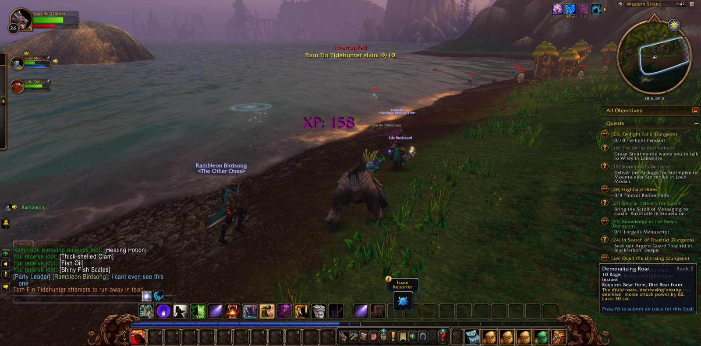
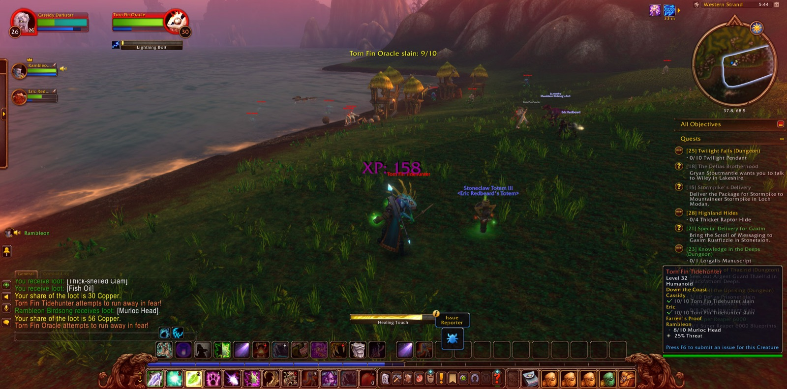
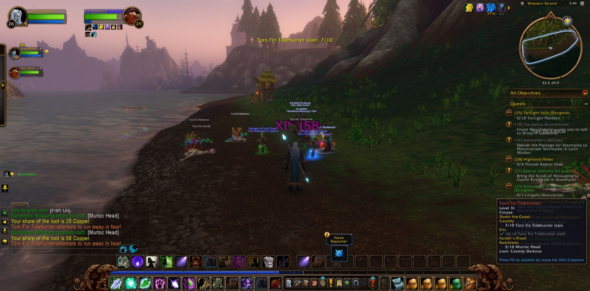
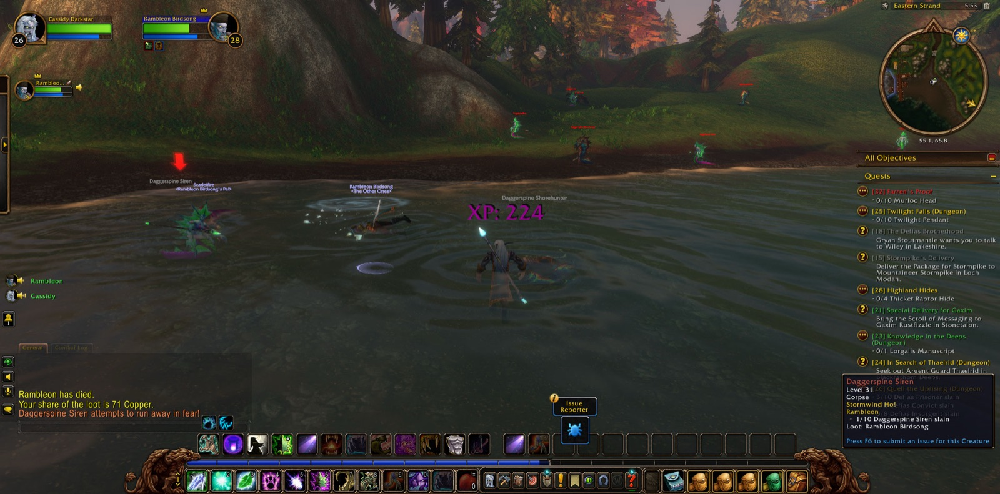
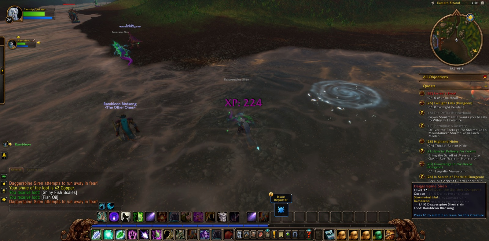
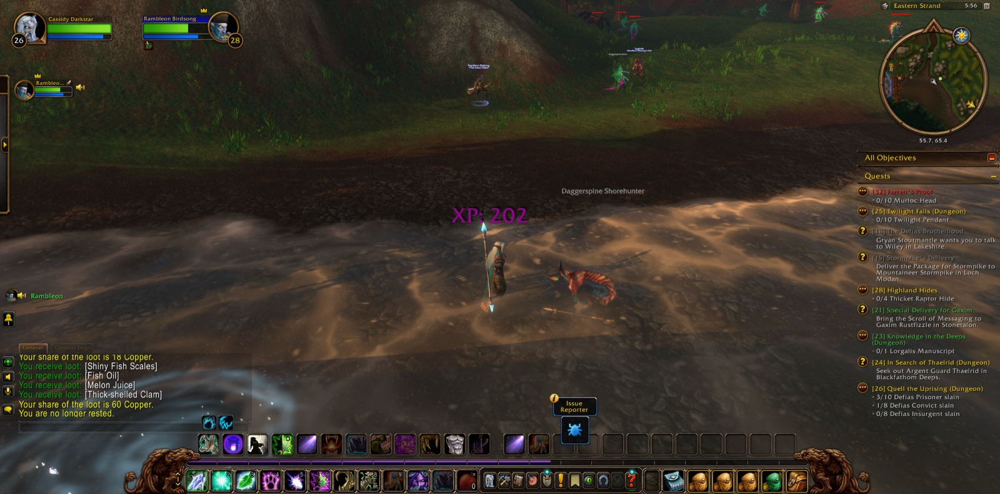
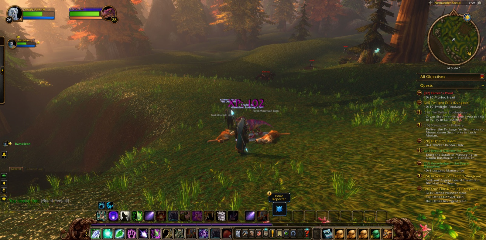

Cassidy Darkstar set out from the Cathedral of Light in Stormwind City and passed through Cathedral Square. There Rambleon the Hunter joined him, and the two kept the road together from that first step to the last. Their way took them to the Deepwater Tavern, which the records place at the Lion's Pride Inn, and then down to Menethil Harbor in the Wetlands. Cassidy took a picture at each of those two thresholds, as a traveller does when he wants to remember where a long road turned. From the harbor they went out by Baradin Bay, came back, and went out again. Then they crossed The Great Sea and came ashore in the Hillsbrad Foothills by the Eastern Strand and the Western Strand, and so reached Southshore.


At Southshore the errands gathered quickly. Cassidy brought "The Shamed Lieutenant" to its end there. He took up "A Lack of Virtue," a charge to carry Tom's Gift back to Bart Tidewater in Menethil Harbor, and with it "Down the Coast" and "Brewer's Trade." In the Southshore Town Hall, where he took another picture, he accepted "Syndicate Assassins" as well. Then he and Rambleon went down again to the Western Strand.


On the Western Strand the Torn Fin murlocs held the shore, and there the work of "Down the Coast" was done. Eric the Shaman came to stand with them for a short stretch of that shore. Together they brought down ten Torn Fin Tidehunters and ten Torn Fin Oracles, and Cassidy took picture after picture while the fighting went on. Once he fell there. He rose again and finished what he had begun. Eric then went his own way, with thanks owed to him, and Cassidy returned to Southshore. He laid the finished errand of "Down the Coast" before the one who had asked it, and in return was given "Farren's Proof."


From there the companions went east along the Eastern Strand, where Daggerspine Shorehunters and Daggerspine Sirens fell before them, and on to Nethander Stead. Feral Mountain Lions and Elder Moss Creepers were overcome in those hills. In the end they came to Dun Garok, a new name on Cassidy's road. Near there he found the Sack of Homebrew Hops that "Brewer's Trade" had asked of him. There was no new strength in him this time, but he carried two errands finished and fourteen places walked. Tom's Gift was still in his pack, and the way back to Menethil Harbor lay open before him, as did all the roads beyond it.







